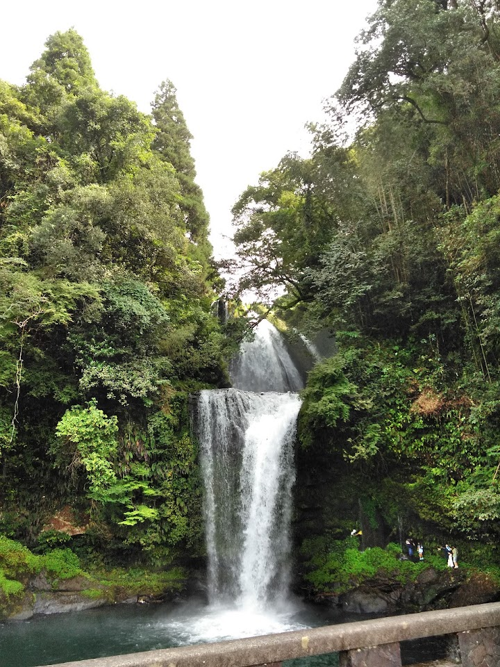
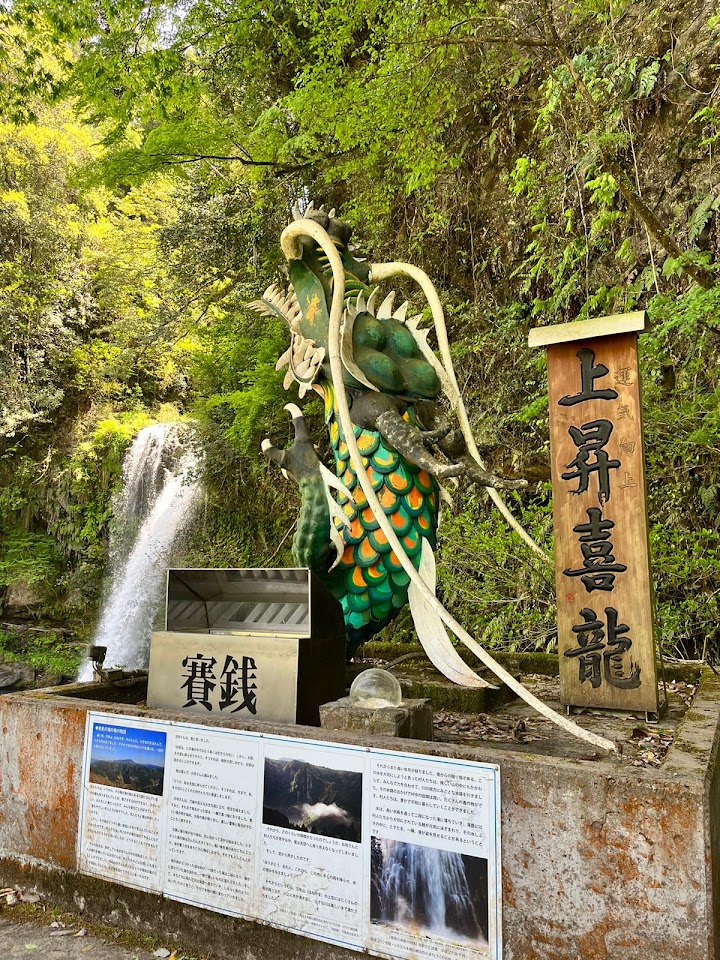
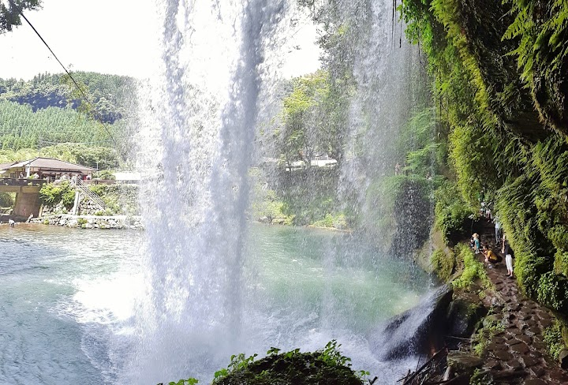
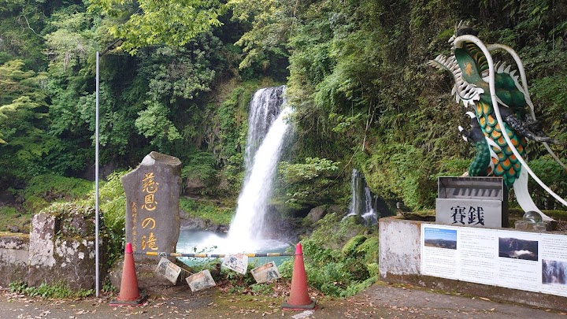
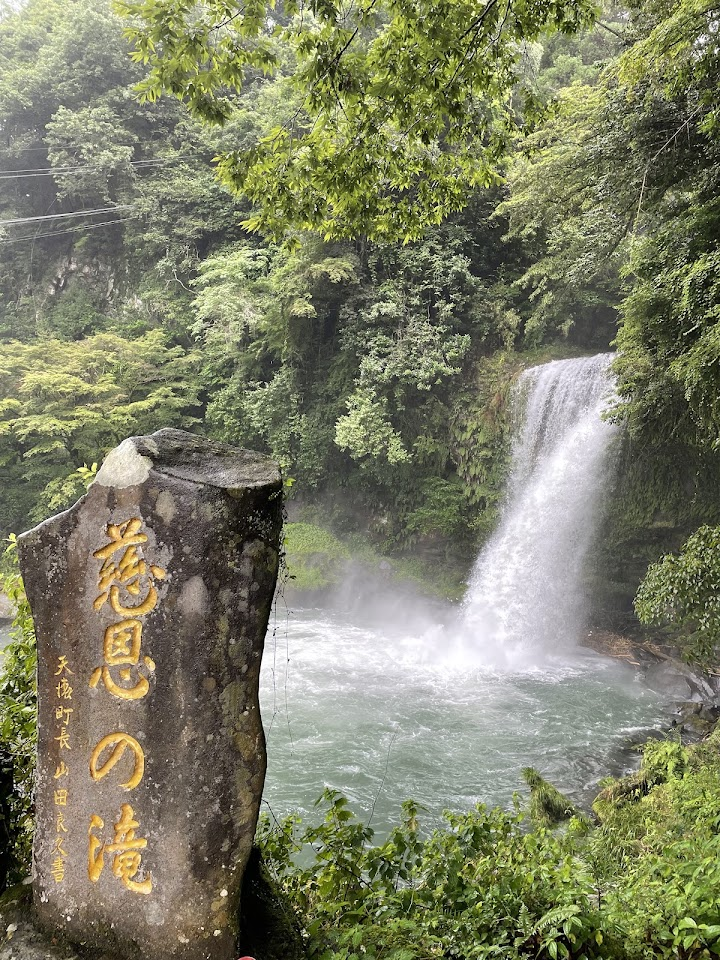

Waterfall Jion
Jion Falls is a peaceful two-tiered waterfall in a lush valley with room to walk behind the water. It is easy to reach, with parking and toilets, and pretty with autumn colour.
Open in Google Maps (street view, more photos and reviews there)






Visitor tips on finding it and getting there
Super raging due to the heavy rainy season in Kyushu this year. The trail to walk underneath the falls is closed but the waterfall itself is very beautiful to view.